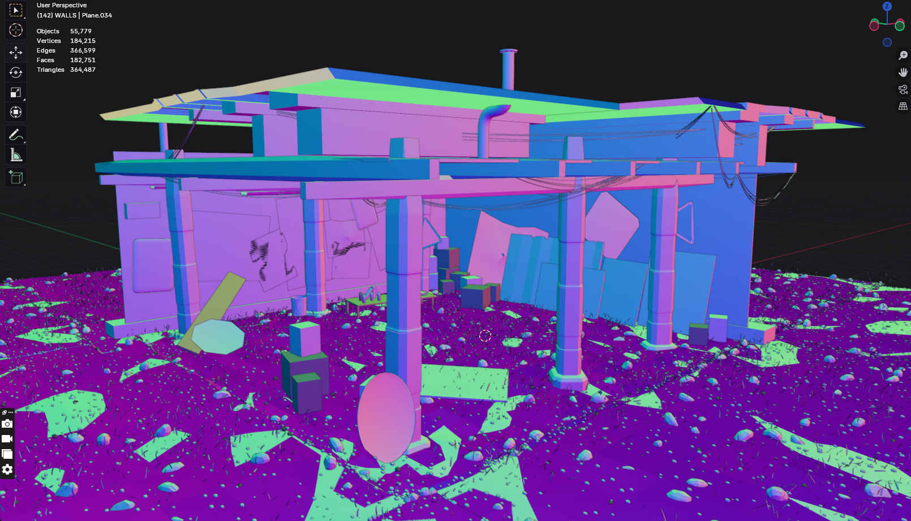
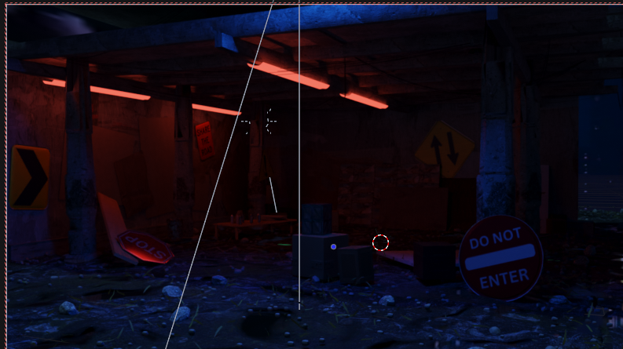
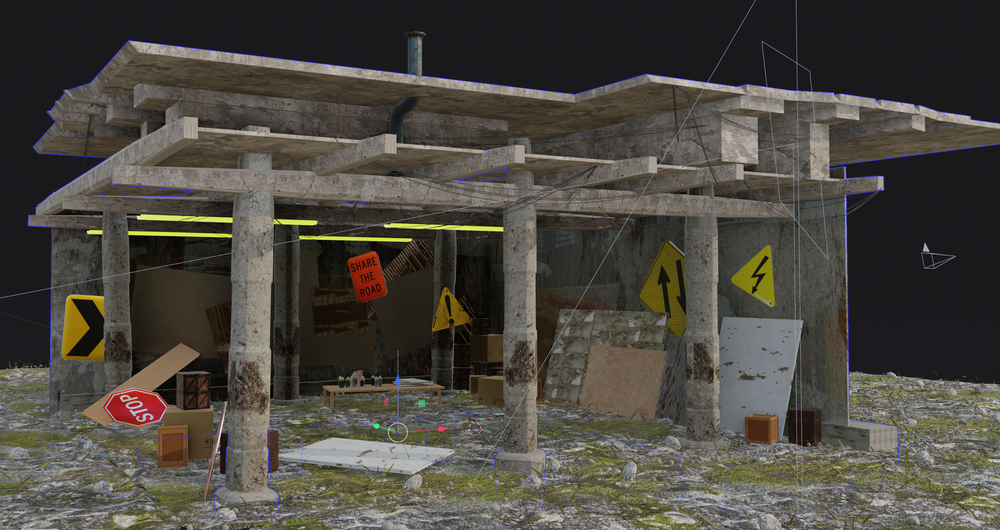

Overview
Zone One is a single-scene VR environment where users can interact with objects
by picking them up, throwing them, and spray painting surfaces in the space.
Interaction happens through user actions applied directly to objects and surfaces.
Most props in the scene are interactive except for the architecture and a
central table. Users can spray paint directly onto objects and surfaces,
creating temporary markings that fade out after a short period of time.
Interaction Logic
Spray paint is applied using a particle-based system that spawns decals at collision points when the spray hits a surface. Each paint decal has a limited lifetime and fades out gradually before being destroyed.
Object interaction uses standard VR grab and throw mechanics. Users can pick up props, move them around the space, and throw them.
Tools & Build
- Built in Unity as a single-scene VR environment
- VR interaction implemented using Unity XR tooling
- Spray paint system coded in C# using particle collisions and decals
- Environment and props modeled and refined in Blender
Exhibition
Exhibited as part of Art + Tech Studio at Pratt Institute in 2025. The project was presented as an on-site VR installation with headset interaction and screen capture documentation in the Myrtle Digital Plaza.


